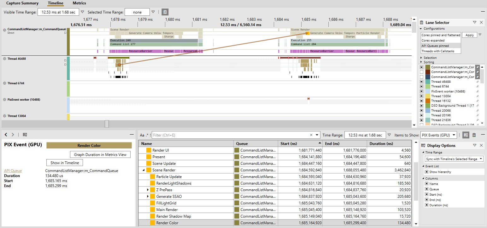
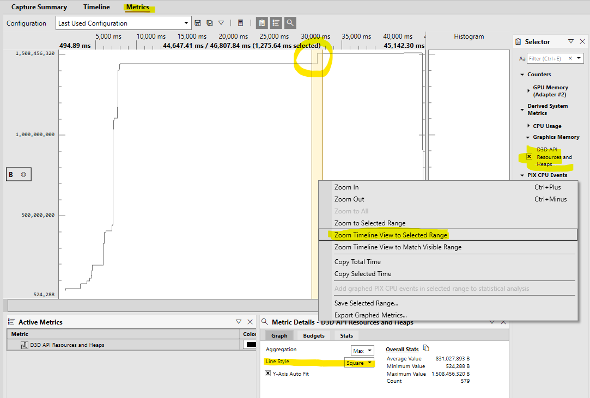
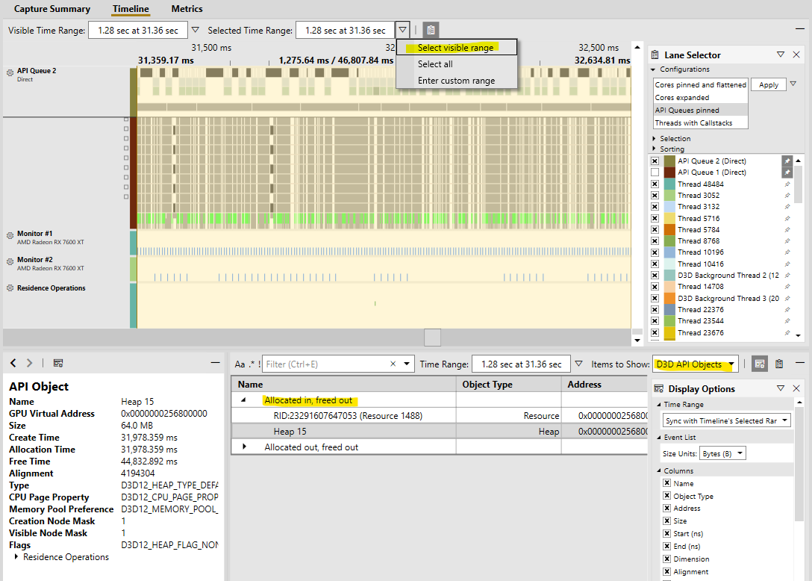
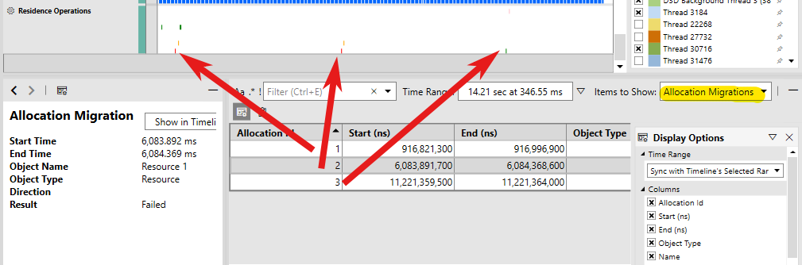
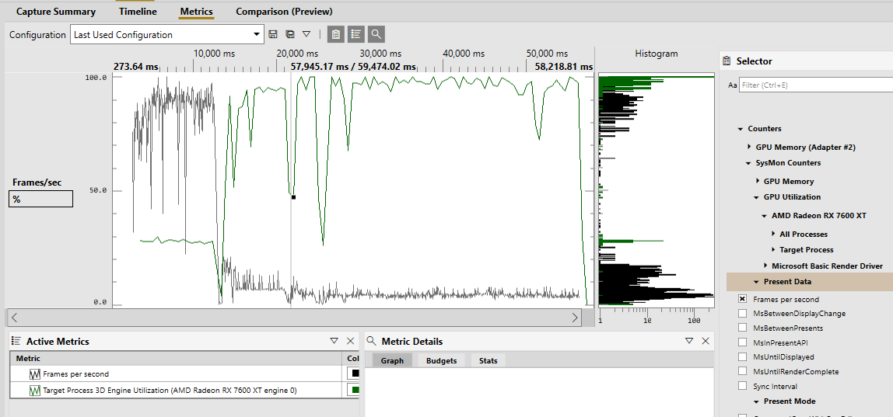
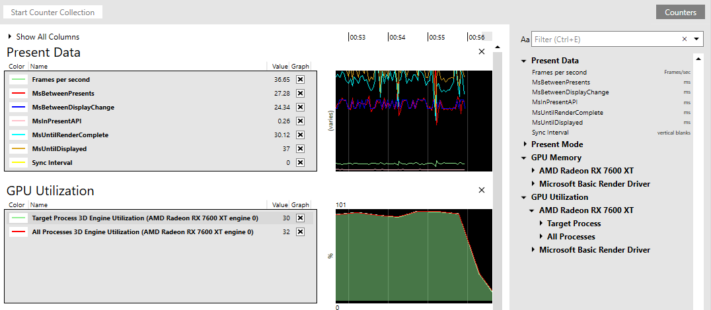

Timing captures combine both CPU and GPU profiling data into a single capture for in-depth analysis of your application. That data is gathered while the game is running, and with minimal overhead, so that you can see things such as how work is distributed across CPU cores, the latency between graphics work being submitted by the CPU and executed by the GPU, when file IO accesses and memory allocations occur, and so on. That also includes application-defined events, markers, and counters via PixEvents.
From the Connection view, either launch or attach to your desired process (ensuring the relevant For GPU Capture option is unchecked).
Configure your timing capture options as necessary and, when ready, click the Start Timing Capture button to begin recording. Click Stop Timing Capture (or terminate your app) to end the recording. After a brief processing period, the capture will open.
| Name | Description |
|---|---|
| Capture Mode | Sequential: Record entirety of events between starting and stopping the capture. Circular: Record events into a fixed size buffer, only saving the last n seconds of data. See this Circular Timing Captures blog post for more details. |
| CPU Samples | Perform sample profiling to see where CPU is spending time. Sample rate is configurable. |
| Callstacks on Context Switches | Collect callstacks when a thread switches contexts. |
| File accesses | Track file accesses. |
| GPU timings | Collect detailed timing information about when GPU work starts and stops. |
| GPU resources | Collect detailed information about D3D objects like heaps and resources. Also track GPU residency, demoted allocations, and allocation migrations. |
| VirtualAlloc/VirtualFree events | Tracks allocations made via the VirtualAlloc and VirtualFree functions. |
| HeapAlloc/HeapFree events | Tracks allocations made via the HeapAlloc and HeapFree functions. |
| Custom allocator events | Tracks allocations made by custom memory allocators instrumented with PixEvents. |
| Page Fault events | Collect data on page faults that occur when the capture is running. The page faults are shown in the timeline and in the element details view. |
| Callstacks for non-title processes | Capture callstacks for processes other than the title process (the launched or attached to process). |
| Kernel image information | Collect information need to show callstacks for kernel binaries. |
| Generate .etl file instead of .wpix file | The generated .etl file can later be converted to a .wpix file in the File | Convert menu. This option is useful when reporting bug repros to the PIX team or if you have other tooling for processing ETW data. |
You can programmatically take a capture using the WinPixEventRuntime. For details, see the blog post Programmatic capture.
Enabling the CPU Samples option when taking a capture can help you pinpoint slow functions in your application's hot path, as well as find issues related to thread waits and context switches. You'll also be able to track different kinds of allocations (with the appropriate capture option enabled).
There are several blog posts that cover those features in detail:
Is your app experiencing intermittent frame drops? Excessive VRAM usage? Unexpected paging operations between system memory and VRAM? The GPU profiling features in PIX can help you get to the bottom of these common and difficult-to-analyze situations.
Enable the GPU timings option when taking a capture to collect timing data for GPU work. In the Timeline view, you can find lanes for each GPU queue (in the Lane Selector, you can quickly pin those lanes with the API Queues pinned configuration). Those lanes contain several sublanes:
When you select an event in the lane, you'll see arrows showing where on the CPU that event originated. There are also various visualization options in the lane options menu (the gear icon next to the lane name). Most notably, the Flatten Events and Flatten GPU Work options are enabled by default to preserve space, but you might want to see the full PIX Event hierarchy or GPU Work paralellization when diving into a specific frame.
That data is also available in tabular form via Range Details view by selecting the relevant category in the Items to Show drop-down.

Vsyncs are displayed as markers in a separate Monitor lane, and can be found in Range Details view within the Other category.
Enable the GPU resources option when taking a capture to collect information about Direct3D objects. To graph overall memory usage, you can find several counters in Metrics view. You can configure various budget lines to get a quick idea of whether you're meeting your memory usage goals. When you find an area of interest, you might want to investigate further by selecting the time range, clicking Zoom Timeline view to Select Range in the right-click context menu, and setting the Selected Time Range drop-down to Select Visible Range.

[!TIP] Setting the Line Style to Square makes it easier to see where the allocations are made.
In Range Details view, you can view various information about Direct3D API objects such as heaps, resources, and pipeline state objects. To make it easier to pinpoint any suspicious objects, that information is grouped by when it was allocated and freed.

For residency related issues, see out the Residence Operations, Demoted Allocations, and Allocation Migrations categories of Range Details view. Those markers and events are also shown in the Residence Operations lane.
Residence operations include the MakeResident and Evict operations (initiated via the Direct3D 12 API) as well as any PageIn and PageOut operations (For more details, see Residency). Demoted allocations occur when the graphics kernel (DXGK) can't allocate a resource in your GPU's VRAM (due to either memory pressure or fragmentation). If that happens, then DXGK will also attempt to perform allocation migrations for those demoted allocations. Note that those migrations are expensive operations, because they require suspending the GPU.

Enable the Capture SysMon counters option when taking a capture to collect counters present in the System Monitor (aka SysMon), which includes various counters related to GPU performance. Notably, there are counters for:

[!TIP] Hover over the counter names in the System Monitor for a description.
These counters can also be monitored in real-time, either while taking a timing capture or by clicking the Start Counter Collection button in the System Monitor view. The graphs can be rearranged and counters can be added or removed dynamically. Click Counters to view all available counters.

See the blog post Analyzing Win32 File IO performance in Timing Captures.